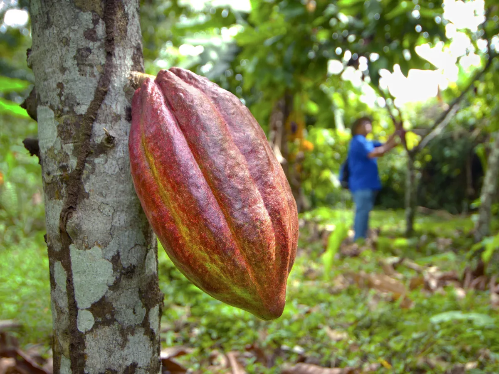
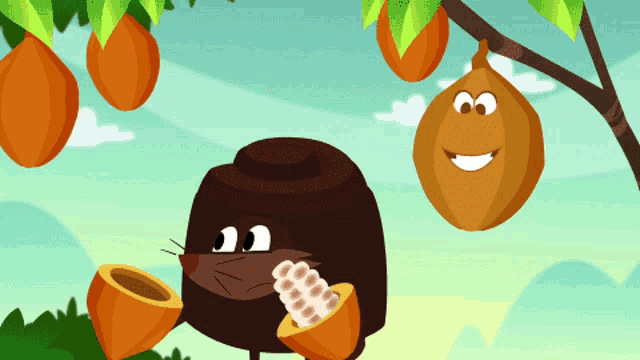
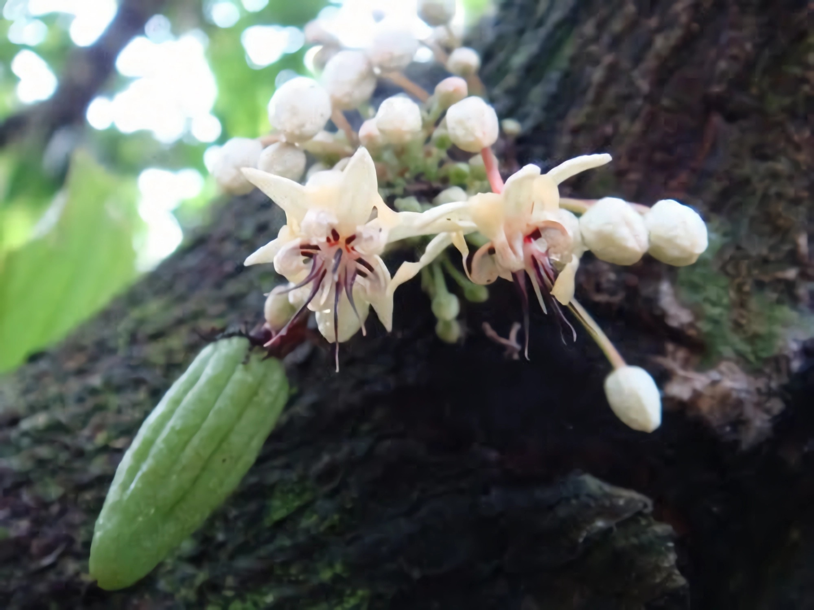
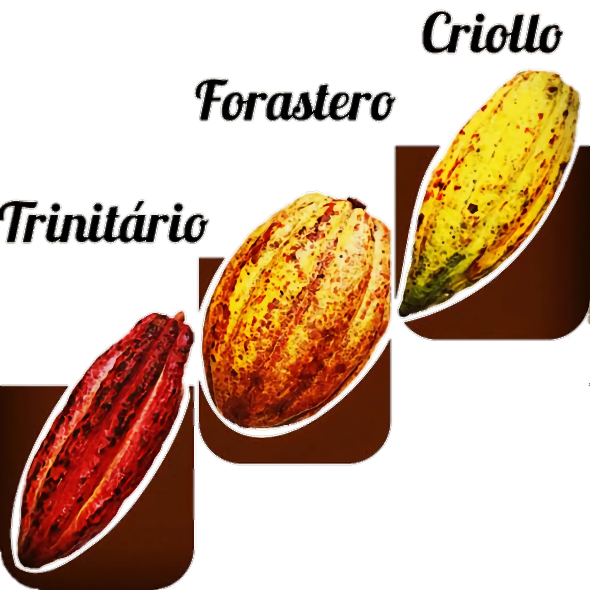
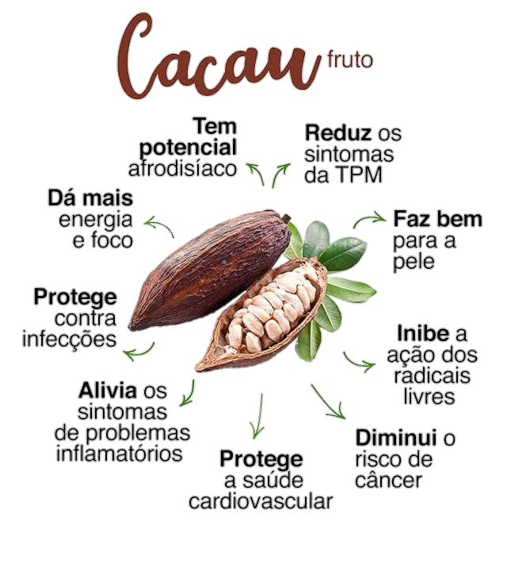
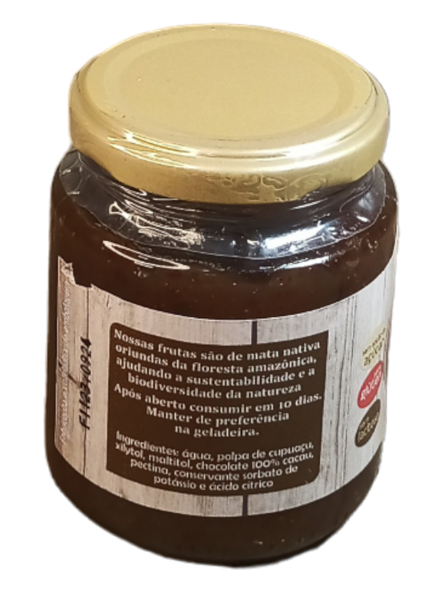
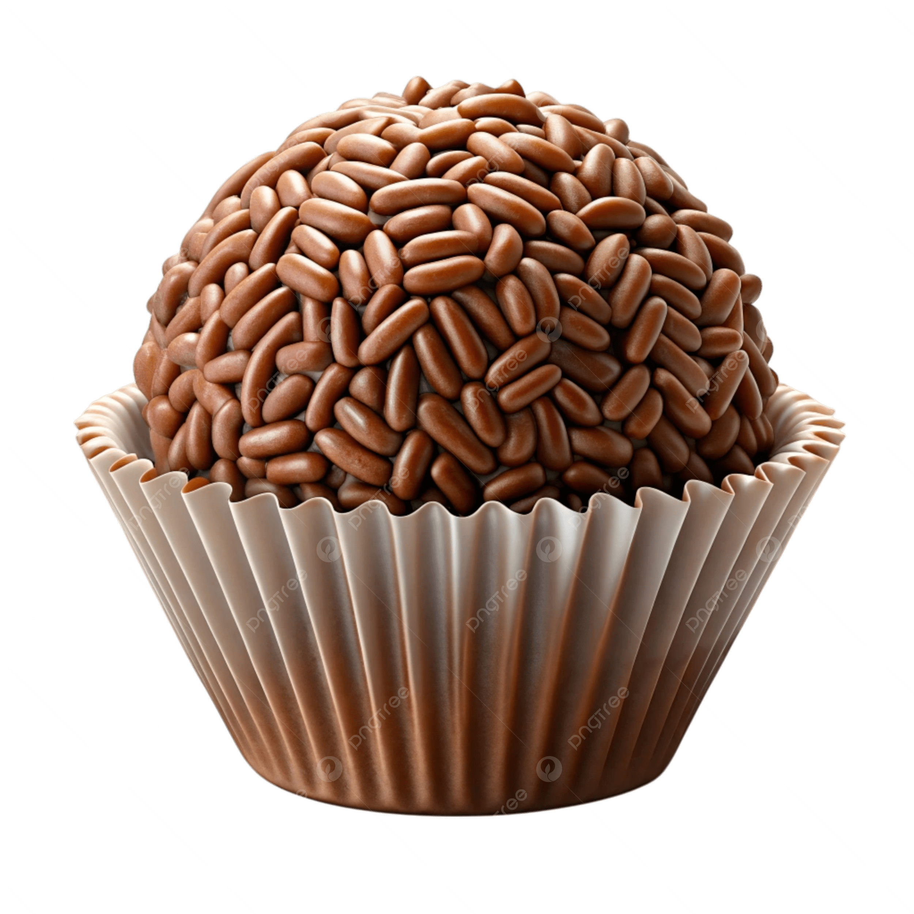

Origem: Nativo das florestas tropicais úmidas da bacia do Rio Amazonas e cabeceiras da América do Sul.
História: Cultivado há milênios por povos como Incas, Maias e Astecas, que utilizavam suas sementes como moeda de troca e para preparar uma bebida amarga chamada xocolātl.

Clima: Exige clima quente e úmido, típicos de regiões próximas ao Equador.
Sistema de Cultivo: Pode ser plantado em sistemas agroflorestais (como a "Cabruca" na Bahia), onde o cacaueiro cresce sombreado por outras árvores.
Época de Plantio: O melhor período é no início da estação chuvosa (dezembro a abril/maio em várias regiões do Brasil), para garantir água às mudas.
Colheita: A primeira colheita acontece após o segundo ano, mas o ápice da produção ocorre do quinto ano em diante.
A colheita é manual e identificada pela mudança de cor da casca (de verde/vermelho para amarelo/laranja).

Caulifloria: Uma característica curiosa é que as flores e frutos nascem diretamente no tronco e nos ramos principais.
Flores: São pequenas, pentâmeras e de coloração branca, amarela ou rosada.
Polinização: Realizada por moscas minúsculas do gênero Forcipomyia. O momento de maior florescimento ocorre no final da estação seca.

Existem três tipos principais de cacau:

O cacau é rico em compostos bioativos, especialmente em sua forma pura (sem açúcar/leite):
|
Cacau Valor nutricional - teores em 100g de fruta |
|
| Energia (kcal) | 61 - 71 |
| Carboidratos (g/100g) | 13 - 16 |
| Gordura Total (g/100g) | 0,3 - 1 |
| Acidez (%) | 0.90 |
| Proteínas (g/100g) | 2 - 5 |
| Fibras Totais (g/100g) | 1 - 88 |
| Sólidos solúveis totais (ºBrix) | 14 |
Melhora o Humor: Ação no sistema nervoso, estimulando a produção de serotonina e endorfina.
Saúde Cardiovascular: Ajuda a reduzir o colesterol LDL e a pressão arterial, prevenindo tromboses.
Ação Anti-inflamatória e Antioxidante: Combate radicais livres, prevenindo o envelhecimento precoce e doenças crônicas.
Melhora a Função Intestinal: Devido ao seu teor de fibras.

Ingredientes: 2 xícaras de leite (ou bebida vegetal);
2 colheres de sopa de cacau em pó 100%;
1 colher de chá de amido de milho;
1 canela em pau;
adoçante a gosto (opcional);
30g de chocolate 70% picado.
Preparo: Dissolva o cacau e o amido no leite frio. Leve ao fogo baixo com a canela.
Mexa até engrossar. Adicione o chocolate picado e mexa até derreter. Retire a canela e sirva.
Ingredientes: 500ml de suco de polpa de cacau fresco;
100g de açúcar demerara;
1 colher de sopa de suco de limão;
Preparo: Coloque o suco de cacau e o açúcar em uma panela. Leve ao fogo médio,
mexendo de vez em quando. Quando começar a reduzir, adicione o suco de limão.
Cozinhe até atingir o ponto de geleia (consistência espessa). Armazene em pote esterilizado.

Ingredientes: 1 lata de leite condensado (ou versão fit);
3 colheres de sopa de cacau em pó 100%;
1 colher de sopa de manteiga;
50g de nibs de cacau para confeitar.
Preparo: Misture o leite condensado, o cacau e a manteiga em uma panela. Leve ao fogo
baixo, mexendo sem parar até desgrudar do fundo. Deixe esfriar. Enrole e passe nos nibs de cacau para dar crocância.

Um vídeo que ilustra o processo de fabricação do chocolate, desde as sementes de cacau até sua chegada às prateleiras das lojas.